ティップス
ニュージーランドの運転事情
2018年のニュージーランド釣行の際、クライストチャーチの空港ロビーにて、Transport Agency という政府機関が無料で配布していた「DRIVING IN NEW ZEALAND ニュージーランドでの自動車の運転」 というパンフレットをいただいたので、紹介させていただきます。
上記のリンクよりPDFファイルがダウンロードできます。以降、太字の赤字は、伊藤による強調、青字は伊藤のコメントと感想などです。
ニュージーランドの運転事情
ニュージーランドで運転する際、海外から来られた方にはなじみのない事柄が幾つかあると思われます。例えば：
・車は道路の左側を通行します。
・移動時間を少なく見積もってしまいがちです。
・道路は予想以上に幅が狭く、曲がりくねっていて、場所によっては急勾配があります。
・ほとんどの道路は両側通行で、片側１車線です。高速道路もありますが、数は多くありません。
どうぞ安全で思い出に残る旅をお楽しみください。
ニュージーランドは日本と同じで、車は道路の左側を通行しますが、アメリカなど、反対の右側を通行する規則の国もたくさんあります。12月～2月頃の観光シーズンには、海外からの旅行客がレンタカー、キャンピングカーなどで移動することも非常に多くなります。左側通行になじみが無いドライバーも大勢いると思われますので、くれぐれも安全運転を心掛けて下さい。スピードは控えめに。中央分離帯の無い、片側１車線の道路を互いに時速100kmですれ違うことになりますので、ちょっとした接触でも大きな事故になります。
また、ニュージーランドの中でも交通量が多く、整備が行き届いているステートハイウェイ１号線（SH1）などは別格として、地方の道路ではアスファルト舗装されていても、突如として直径30cmくらいの大穴に出くわすことがありますので、十分ご注意下さい。
道路は国家警察が監視し、全ての道路利用者が規則に従い、交通安全を守るように努めています。全国各所にスピードカメラが設置されています。
道路交通法に違反したり事故を起こした場合、罰金や起訴の対象となることがあります。
2018年時点のニュージーランドにおけるスピード違反の取り締まりは、パトカーに収納された装置によって行われているようです。僕が留学していた 2000-2002年当時は、郊外の幹線道路に停められた、何の変哲もない普通のワゴン、バンなどが用いられていました。また、市街地では固定式の装置も設置されています。
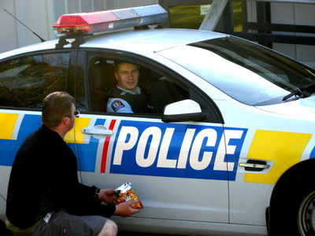
2018/11に目撃したところでは、郊外のハイウェイで、新しい青色ボディのパトカーがスピード違反の取り締まりを行っていました。この青色ボディは目立たないのでご注意下さい。（笑）
冗談はさておき、スピードは控えめに、安全運転を心掛けて下さい。
移動時間
ニュージーランドでは移動時聞を少なく見積もってしまいがちで、す。地図上では距離が短いように感じられる場合でも、ニュージーランドの道路は幅が狭く、カーブや起伏も多く、その種類も高速道路から未舗装の砂利道までさまざまです。主要都市以外の地域では、ほとんどの道路は両側通行ですが、片側一車線です。
移動時間の計算には、移動時間・距離 計算ページ ： https://www.aa.co.nz/travel/time-and-distance-calculator/をご利用いただけます。
左側通行
常に道路の左側を通行してください。一部、幅の狭い道路にはセンターラインが引かれていないので注意が必要です。
・運転中は常に左側通行を心がけ、交差点や道路へ進入する際には、特に注意する。
・道路の左側を通行し、右左折の際もショートカットして曲がらない。
・安全に追い越しや右・左折ができる場合を除き、センターラインをはみ出してはいけません。
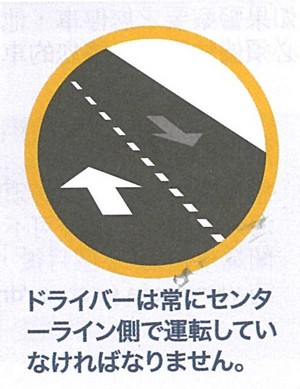
左側通行追い越し
ニュージーランドの道路はほとんどが片側１車線ですが、一部の道路には一定間隔で「追い越し車線」が設けられています。「追い越し車線」に差し掛かるまで無理はせず;可能な限り、その区間内で、追い越しを行ってください。
センターラインの内側に黄色の実線が引かれている区聞は、そこでの追い越しが危険であることを意昧し、追い越しのために実線をはみ出すことが禁止されています。
センターラインが黄色の二重線になっている区間では、双方向の車線における追い越しが禁止されています。
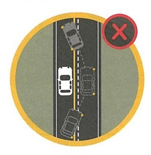
追い越し禁止を示す表示ラインセンターラインの内側に黄色い実線がない区間では、追い越しの最中に前方100mまで対向車がないことを見通せる場合に限り、安全に追い越すことができます。
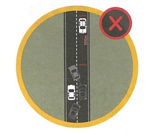
対向車が近づいたら追い越し禁止
ニュージーランドの郊外や牧場地域では、搾乳した原乳を運搬する２連結式の大型トレーラー（タンカーと呼ばれています）が頻繁に走っています。この大型トレーラーは、時速80～95km くらいで走っていることが多いので、すぐに追い越したくなりますが、車体の長さがとても長いので、前方100ｍ以上！は対向車が来ていない、十分長い直線区間でのみ、追い越すように気を付けて下さい。！！ 性急な追い越しはとても危険です。
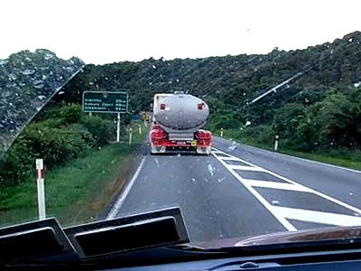
カーブやその付近での追い越しは厳禁です。
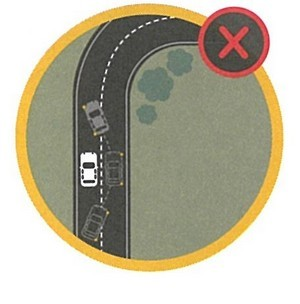
カーブやその付近での追い越しは厳禁ゆっくり運転したいときは、後続車が列をなしているのに気付いたら、安全な場所を見つけて路肩に停車し、後続車に道を譲ります。
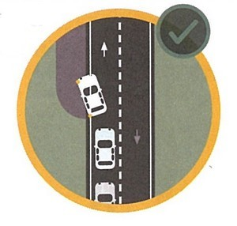
ゆっくり運転したいときは
後続車を先に行かせてあげる場合、自分の車を停める位置を注意して選んで下さい。地方の道路の路肩は砂利敷きで、斜めに傾いていたりするので、ゆっくり慎重に止まらないと、ハンドルを取られて道路外に落ちることがあります。（あわや！の経験あり）
運転速度
ニュージーランドの道路では場所によって制限速度が異なります。速度標識に注意を払ってください。速度標識で現在走行している区間の制限速度を確認することができます。安全運転するために、制限速度以下で走行しなければならない場合があります。従って、lOOkmの距離の移動時間が1時間で、あることはめったにありません。走行距離の割りに時間がかかる場合も多いため、時聞に余裕を持って旅の計画を立ててください。
市街地から離れた幹線道路では、特に指定がない限り、制限速度は時速100kmです。
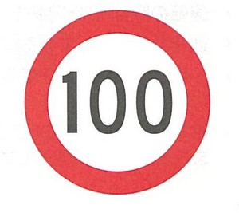
幹線道路では、特に指定がない限り、制限速度は時速100km総重量が3,500kgを超える車両(大型キヤンピング力ーなど)を運転する際は、時速100kmと表示された道路でも、時速90kmの制限速度が適用されます。
市街地では、特に標識がない限り、通常の制限速度は時速50kmです。
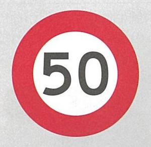
市街地では、特に標識がない限り、通常の制限速度は時速50km
幹線道路から市街地に入ったすぐの場所で、頻繁にスピード違反の取り締まりを行っていますので、かならず 50 の標識があったら速やかに速度を落として下さい。
注意を促す黄色の速度標識は、急カーブや曲がり角に差し掛かろうとしていることを警告するとともに、安全に、無理なく通過できる推奨速度を表しています。矢印はカーブの方向を示しています。
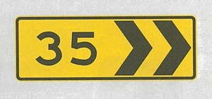
注意を促す黄色の速度標識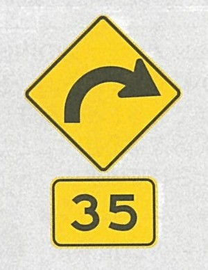
矢印はカーブの方向を示しています
ニュージーランド郊外の道路では、快適な直線区間からいきなり急カーブが現れますので、上記の標識を見たら、速やかに、きちんと指示されている速度まで減速して下さい。
さらに、対向車がセンターラインを越えてこちら側にふくらんで来ることが往々にしてあるので、カーブでは、路肩に落ちない範囲で左側を走って下さい。
シートベルト
法律により、車内ではシートベルトの着用またはチャイルドシートの使用が義務付けられています。これは前・後部座席のいずれにも適用されます。
年齢と法的要件
７歳未満の子供 → 認可チャイルドシート
７歳の子供 → 認可チャイルドシートがある場合はそれを使用（シートベルトも可）
８歳以上の子供 → シートベルト
成人 → シートベルト
疲労
疲労時には事故を起こす確率が通常よりもはるかに高くなります。
・特に、国際便で長時間かけてニュージーランドに到着したばかりのときは、運転前に十分な睡眠を取りましょう。
・運転の際は、2時間おきに休憩しましょう。可能な場合は、交代で運転しましょう。
・通常ならば眠っている時間帯には、運転を避けましょう。
・一度に多くの食事を取ると、疲労感を覚えることがあるので、避けてください。水分も十分lこ取りましょう。
・眠気を感じ始めたら、安全な場所に停車し、短い仮眠(15分から30分)を取るようにしましょう。極度に疲労しているときは、翌朝までどこかで一泊するようにしましよう。
釣り場があるような地域、釣り場までの経路上には、日本と違ってコンビニやカフェなどのお店が無いので、コーヒーや眠気覚ましのガムを気軽に飲んだり、買うことができません。日本から、眠気覚まし用のガム（粒タイプ、プラスチックボトル入り）を持って行くと良いでしょう。でも、眠たくなったら、ちゃんと仮眠を取って下さい。
交差点
「STOP(止まれ)」の標識があるところでは、車両を安全に停止して、他の全ての交通に道を譲ります。
「STOP(止まれ)」の標識「GIVE WAY (譲れ)」の標識があるところでは、交差する道路を直進する全ての交通に道を譲ります。右左折の際も、直進車両に道を譲らなければなりません。
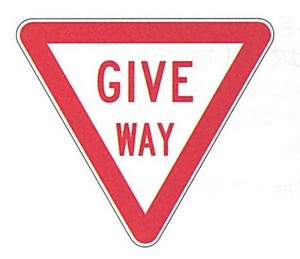
「GIVE WAY (譲れ)」の標識ラウンドアバウト(口ータリ一)では、右から向かってくる交通に道を譲ります。ラウンドアバウトの進行方向は時計回りです。
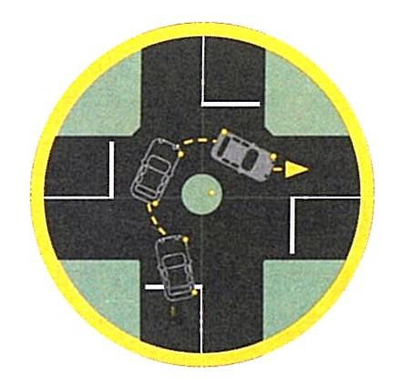
ラウンドアバウト(口ータリ一)の通行方法右左折する前に、最低3秒間、方向指示器を出してください。
ニュージーランドでは、信号が赤のときは、進もうとしている方向を指す矢印が青色に灯火している場合を除き、進むことはできません。
青信号で右・左折するときは、直進する交通や、道路横断中の歩行者に道を譲ります。
１車線の橋
１部の地域にある１車線の橋で、は、対向車が渡り終わるのを待ってから渡る必要があります。
下の標識は、前方に１車線の橋があることを警告しています。速度を落とし、対向車の有無を確認してください。道を譲る必要があるときは、停止してください。赤い(小さい方の)矢印は、どちらの進行方向が道を譲る必要があるかを示しています。
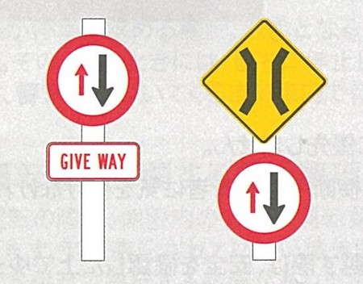
橋を渡る際、対向車に道を譲るべき標識これら2つの標識は、橋を渡る際、対向車に道を譲らなければならないことを示し ています。
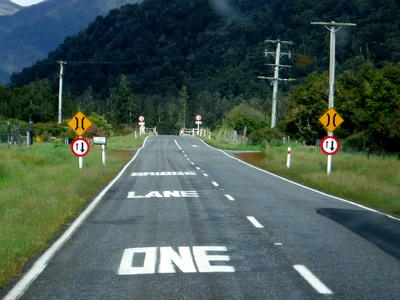
BRIDGE LANE ONE の表示
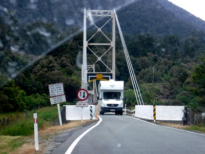
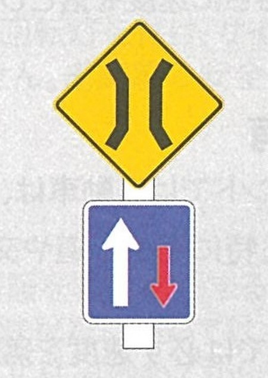
対向車がいないときに注意しながら橋を渡ってもよい標識この標識は、対向車がいないときに注意しながら橋を渡ってもよいことを示しています。
安全に景色を楽しむ
景色に気を取られて道路から目を離してはなりません。停車して景色を眺めたいときは、道路脇の安全な場所を見つけて停車してください。
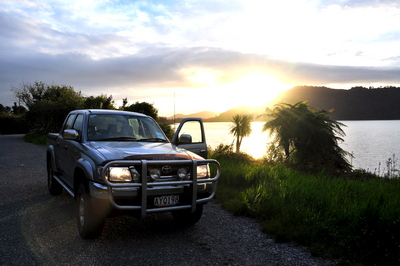
携帯電話
運転中は、携帯電話を手に持って使用してはなりません。使用できる電話は、ハンズフリーのものに隈られます。運転中に携帯電話のメール機能を使用することは違法です。
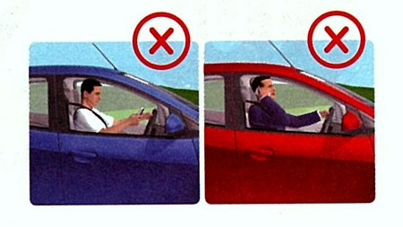
運転中は、携帯電話を手に持って使用してはなりません。
携帯電話と同様、道路地図や釣り場の地形図、観光パンフレットなどを見る時も、道路脇の安全な場所を見つけて停車してからご覧ください。
踏切
踏切は、注意しながら進入してください。
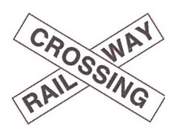
踏切が前方にあることを示す標識・赤信号が点滅しているときは停止し、点滅が終わるまで待ってから進みます。
・「STOP(止まれ)」の標識のある踏切では停止し、どちらの方向からも列車が来ていないことを確認してから渡ります。
・「GIVE WAY (譲れ)」の標識があるときは徐行し、列車が来ていないことを確認してから渡ります。
未舗装(砂利)の道路
未舗装道路は、表面が滑りやすくなっていることがあります。
左側通行を守り、速度を落としましょう。特に、対向車がある場合は、土ぼこりで視界が悪くなったり、フロントガラスに石が当たって傷がついたりすることがありますので、さらに速度を落としましょう。
田舎の未舗装道路でも、制限速度は時速 100km と定められていますが、カーブは多く、進行方向、道路の幅方向ともに勾配が急ですので、ごくゆっくり慎重に運転して下さい。急ハンドル、急ブレーキはスピンの原因となります。さらに、カーブの向こうから、前述の原乳運搬用大型２連トレーラーが突然現れることもあり、ブレーキを踏んでも滑ってすぐに止まれませんので十分ご注意を！
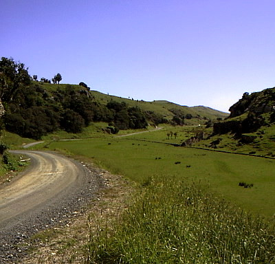
道路の共有
ニュージーランドでは、歩行者や自転車が自動車よりも優先します。
ドライバーは、特に横断歩道や交差点では、道路を横断中の歩行者に気を付けなければなりません。
自転車の近くでは必ず速度を落としましょう。追い越す際は、安全を確認した上でゆっくりと行い、1.5メートルの間隔を空けるよう心掛けてください。
路上で動物を見掛けたときには、速度を落とし、注意しながら進んでください。クラクシヨンは鴫らさないでください。
現在の状況は分かりませんが、90年代～2000年頃には、南島西海岸の道路では、ポッサムというこげ茶色の小動物がよく車に轢かれてペシャンコになって死んでいました。突然この轢死体に出くわした時に、急ハンドルを切って避けようとすると思わぬ事故につながりますので、可哀想ですが、そのまま通過した方が安全だと思います。
また、路上で動物と遭遇した時、遠くから発見して余裕を持って速度を落とすことができれば良いのですが、突然近距離に生きた小動物が現れた場合にも、急ハンドルで避けずにそのまま直進した方が良いと、現地の方に教わったことがあります。同様に、急ブレーキをかけることも、スピンを起こしたり、後続車に追突される恐れがありますので避けた方が良いでしょう。自然保護、動物愛護の観点からは問題があると思われますが.....。
冬季の運転
ニュージーランドの天候は変わりやすいことから、運転には技術と集中力を要します。
出発前に、
天気予報(https://www.metservice.com/)と、
交通情報(https://www.nzta.govt.nz/traffic/)
を確認し、移動中の状況変化には柔軟に対応しましよう。
降雪や凍結によって道路は普段よりも一層危険になります。これは特に山道について言えます。そうした気象条件の中で運転する可能性が高いときには、レンタカー業者がタイヤチェーンを用意してくれることがよくあります。出発前に、チェーンの取り付け方を確認してください。
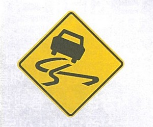
「スリップ注意」の標識路面の濡れや凍結の可能性を示す「スリップ注意」の標識に注意を払い、それがある場所では減速し、急ブレーキを避けてください。
昨今の異常気象で、極端な大雨や、ゲリラ豪雨が増えているようです。冬期でなくても、ドライブ前には、上記の 天気予報 交通情報 サイトを確認して、崖崩れ、河川の洪水などに巻き込まれる事故、道路の閉鎖にもご注意下さい。
駐車
ニュージーランドでは、道路の進行方向とは逆側に駐車すると、罰金が科されたりレッカー移動されることがあります。ただし、一方通行の道路では、どちら側に駐車しても構いません。
釣行の際、空き地などに車を駐車する時には、ぬかるみや深い草にはまって動けなくなることもありますので、十分に気を付け下さい。フィッシングガイドさんが乗っているような４輪駆動車ならばいいのですが、普通の乗用車タイプのレンタカーだと、立ち往生してしまうリスクがあります。（経験者、談）
比較的治安が良いと言われているニュージーランドですが、車上荒しに遭ったという話もよく聞きます。駐車して釣りに出かける際には、シートの上など、外から見える所にはどんな物も置かないこと、貴重品は身に付けて行くこと、車のキーは防水ポーチなどに入れ、釣り場で転倒・水没して使えなくなることがないようにお気を付け下さい。
飲酒および薬物使用
飲酒後や薬物使用後は運転してはいけません。
ニュージーランドでは医療目的以外の薬物使用は違法です。20歳未満のドライバーの場合、許容アルコール量はゼ口です。20歳以上のドライバーについては、許容アルコール量は血液100ミリリットル当たり50ミリグラム、呼気1リットル当たり250マイク口グラムです。
警察に止められたら
警察が停車を求める場合、対象となる車の後で赤と青の回転灯を付け、サイレンを鳴らします。そのようなときには、直ちに停止しなければなりません。道路脇の安全な場所に停車し、警官が近づいてくるまで、車内で待ってください。
運転免許に関する要求事項
運転の際は、期限内の有効な運転免許証か、運転許可証を常に携行する必要があります。英語表記されていない諸外国発行の免許証や許可証については、正確な英訳を併せて携行する必要があります。ニュージーランドに住み始めてから12カ月経過した時点で、国内運転免許を取得する必要があります。
詳しくは、こちら
(https://www.nzta.govt.nz/driver-licences/new-residents-and-visitors/)
をご覧ください。
国際運転免許証、申請方法などについての日本語サイト
（ウィキペディア）
皆様方のニュージーランドでの自動車での釣行、旅行が安全になりますように祈念しております。